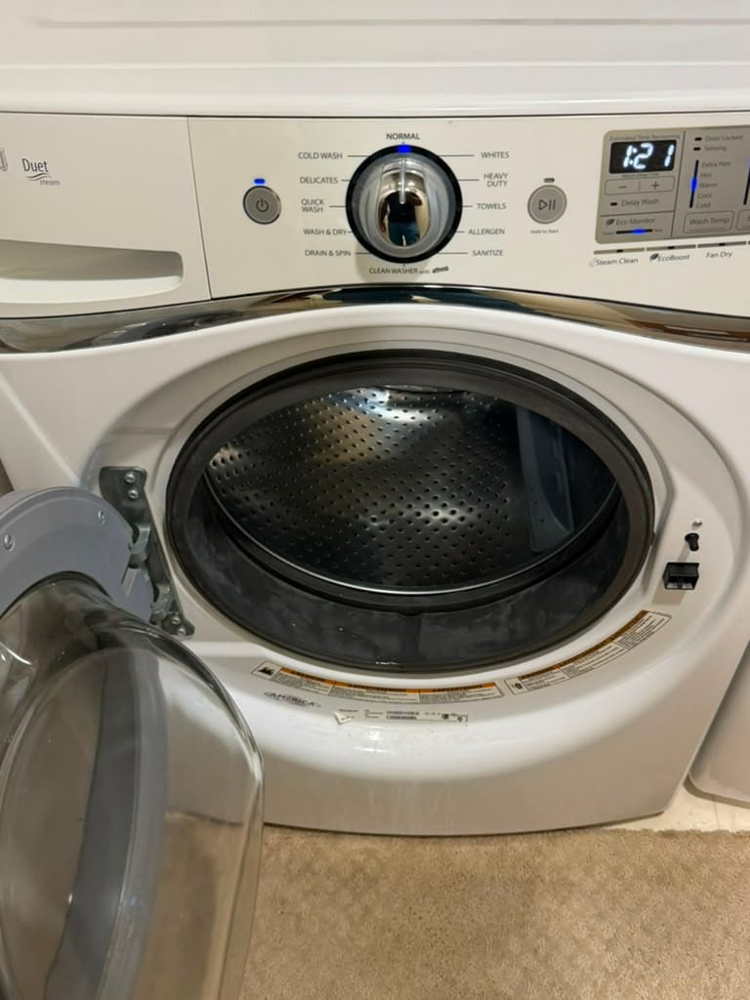

Whirlpool Washer, Dryer, Refrigerator & Range Repair in Orange County
Washers that won't drain or spin, dryers that won't heat, refrigerators that stop cooling, and F21 and ice-maker faults. We know Whirlpool, and the Maytag, KitchenAid, and Amana lines it builds. Same-day service available.
5.0 · 156 Google reviewsMon–Sat, 8am–7pm.

What to expect
- Flat $99 diagnostic feeApplied toward the repair if you approve the work.
- Written quote firstItemized, before any work starts.
- 90-day parts, 30-day laborWarranty on every repair.
- Same-day serviceCall or request online.
Family-owned since 2017 · Licensed, bonded & insured
Recent Whirlpool Repair
A Whirlpool front-load washer our technician recently serviced in Aliso Viejo: the door boot seal had worn and was leaking, so we accessed the drum and replaced the gasket before testing a full cycle.
Chasing a laundry problem instead? Read our guide on Whirlpool dryer repair in Los Alamitos, or see our Orange County dryer repair service.
What Our Customers Say
From our 156 verified 5-star Google reviews
AG fixed our Whirlpool refrigerator. Thank you!
Excellent experience! We have a Speed Queen dryer, and another company didn't want to work on it. This company was efficient, friendly, and made the whole process really easy.
AJ was professional, fast, and honest!!
From Call to Fixed: How a Whirlpool Repair Works
Here is exactly what happens from your first call to a fully working Whirlpool appliance.
Request a RepairCall or Request Online
Reach us at (949) 629-5365 or submit the contact form. Share the model number and the symptom or error code, and we schedule you the same day when possible.On-Site Diagnosis
A technician arrives in a 2-hour window and tests the pump, switch, element, coupler, sensor, or board to find the exact fault, rather than guessing at parts.Upfront Quote
You get a clear, itemized quote before we start. The $99 diagnostic fee is credited toward the repair if you proceed. No surprise charges at the end.Repair & Warranty
Common Whirlpool pumps, elements, and switches ride in the van, so most repairs finish the same day. Every repair carries a 90-day parts and 30-day labor warranty: if the same problem returns within 30 days, we come back at no charge.
Pricing & Discounts
- $99 diagnostic fee: applied toward your repair when you approve the work. If you decide not to proceed, the $99 covers the visit.
- Multi-unit visits: first unit $99, each additional unit on the same visit $49.
- 20% off labor for repeat customers and seniors 60+ (cannot combine with other offers).
Estimates vary by brand, part availability, and diagnosis. Final quote is provided before repair. See full pricing guide
Diagnostic visit$99
- Applied toward the repair when you approve the work
- Itemized written quote before any work starts
- You decide whether to proceed
Washers, Dryers, Refrigerators, and Ranges: Every Whirlpool We Repair
Whirlpool is the everyday workhorse of the Orange County home, and its laundry pairs are the machines we fix most. We service the full lineup, and the same reliable, well-documented parts run across it.
- Top-Load & Cabrio Washers
- Direct-drive and belt-drive top-loaders plus the high-efficiency Cabrio line. The classic failures are a worn motor coupler, a bad lid switch or lid lock, and F1 control faults, and we carry these parts on the van.
- Duet & Front-Load Washers
- Whirlpool's front-loaders share a platform with Maytag and Kenmore. F21 long-drain codes, door-lock faults, worn door boots, and drain-pump clogs are the repairs we handle most often on these units.
- Electric & Gas Dryers
- Both vented electric and gas dryers. A dryer that runs cold usually needs a heating element, thermal fuse, igniter, or gas valve coil, and a clogged vent is the hidden culprit behind most no-heat calls.
- Refrigerators (Side-by-Side, French Door)
- Whirlpool side-by-side and French-door units run in kitchens across OC. We handle cooling loss, evaporator-fan and defrost faults, warm fresh-food sections, and the ice-maker problems these models are known for.
- Dishwashers
- Built-in Whirlpool and Whirlpool-built dishwashers. Not draining, not cleaning, standing water, and control-panel or heating faults are the usual service calls, and a clogged filter or drain pump is the frequent cause.
- Gas & Electric Ranges & Ovens
- Freestanding and slide-in ranges plus wall ovens. A bake element that won't heat, a weak gas igniter, an F2 overheat code, or a drifting temperature sensor are the faults we meter and repair the same day.
Drain Codes, No-Heat Dryers, and Whirlpool's Known Weak Points
Whirlpool appliances fail in specific, recognizable ways. These are the repairs our technicians handle most often on Orange County homes.
- Washer F21 Long-Drain Code
- The front-loader stops mid-cycle with water in the tub. Almost always a clogged drain-pump filter full of lint and coins, and clearing it fixes many cases. If it is clean, the drain pump or pressure switch has failed. We find the exact blockage.
- Washer Won't Spin or Drain
- On top-loaders, a failed lid switch, a broken motor coupler, or a worn drive belt stops the spin; front-loaders usually have a bad door lock. Direct-drive Whirlpools are known for the plastic coupler wearing out. We test each part before quoting.
- Dryer Won't Heat
- Tumbles but blows cold. On electric models it is a blown thermal fuse or heating element; on gas it is the igniter or valve coil. A blocked vent overheats and blows the fuse, so we check airflow as part of every no-heat repair.
- Refrigerator Not Cooling
- A warm fresh-food section points to a failed evaporator fan, a stuck defrost system icing over the coils, or a worn compressor relay. We diagnose the sealed system precisely rather than guessing at the most expensive part first.
- Ice Maker Not Working
- A Whirlpool optical or modular ice maker that stops filling is often the water inlet valve, the ice-maker module, or a frozen fill tube, not the whole assembly. We test the valve and module so you are not paying to replace a part that still works.
- Dishwasher Won't Drain or Clean
- Standing water or gritty dishes usually trace to a clogged filter, a jammed drain pump, or a failed wash-motor or spray arm. We clear the blockage and confirm the pump and inlet valve before returning the unit to service.
- Oven F2 or Won't Reach Temperature
- An F2 overheat code, a bake element that stays cold, or uneven baking usually means a failed element, a weak gas igniter, or a drifting temperature sensor. We meter the element and sensor to pin down which one before quoting parts.
- Washer Leaking or Off-Balance
- Water on the floor or a machine that walks across the room points to a worn door boot, a failed pump seal, or tired suspension rods and shocks. These are common on high-mileage Duet and Cabrio units, and we carry the seals and dampers.
Is It Really a Whirlpool? The Whirlpool Family Explained
Here is something most Orange County homeowners do not realize: the badge on the front of your appliance does not always tell you who built it. Whirlpool Corporation is the largest home-appliance maker in the country, and it does not just build Whirlpool. It also owns and builds Maytag, KitchenAid, Amana, JennAir, and Roper. Those machines roll off shared platforms in the same plants, using many of the same control boards, drain pumps, heating elements, lid switches, and motor couplers.
That matters when something breaks. A Maytag Bravos top-loader and a Whirlpool Cabrio are close cousins under the lid, and a KitchenAid dishwasher shares much of its guts with a Whirlpool one. So a technician who genuinely knows Whirlpool already knows most of the family, and the part that fixes your Whirlpool washer is often the exact part that fixes the Maytag next door. We carry those common parts on the van precisely because they cross so many models.
The practical upshot for you is simple. If your washer, dryer, refrigerator, or dishwasher wears a Whirlpool, Maytag, KitchenAid, Amana, or JennAir badge, we service it, and we usually arrive with the right parts already on board. If you are not even sure which brand you own, read us the model number when you call. It tells us the platform, the likely failure, and the parts to bring, so the first visit is the visit that fixes it.
Whirlpool Repair Costs: What to Expect in Orange County
A new Whirlpool washer or dryer runs roughly $650 to $1,200, so for most faults repair is the clear financial choice. These are typical Orange County ranges, not quotes.
| Repair Type | Typical Range |
|---|---|
| Service call / diagnostic: Orange County market average (often credited toward repair) | $75 – $100 |
| Washer drain pump (F21) / drain clog | $180 – $340 |
| Washer lid switch / lid lock / motor coupler | $150 – $300 |
| Dryer heating element / thermal fuse / igniter | $180 – $320 |
| Refrigerator control board / thermostat | $220 – $420 |
| Refrigerator compressor / sealed system | $350 – $650 |
| Ice maker module / inlet valve | $180 – $350 |
| Dishwasher drain pump / wash motor | $180 – $340 |
| Oven bake element / igniter / sensor | $180 – $360 |
Estimates vary by brand, part availability, and diagnosis. Final quote is provided before repair.
Our company diagnostic fee is a flat $99 in Orange County, credited toward the repair if you proceed. See our full appliance repair cost guide for broader Orange County pricing context.
Whirlpool repair across Orange County
Universal Appliances Repair Group Inc. provides Whirlpool appliance repair across Orange County, California, including top-load and front-load washers, electric and gas dryers, side-by-side and French-door refrigerators, dishwashers, and gas and electric ranges. Whirlpool also builds Maytag, KitchenAid, Amana, and JennAir, so we service those on the same parts. Common repairs include the F21 long-drain washer fault, dryers that will not heat, refrigerators not cooling, and ice-maker failures.
We serve Costa Mesa, Mission Viejo, Irvine, Anaheim, and Santa Ana and surrounding cities, with same-day service available. Call (949) 629-5365 or book online to schedule a Whirlpool repair visit.
What Orange County Whirlpool Owners Ask Us
The most common questions from Whirlpool owners across Costa Mesa, Mission Viejo, Irvine, Anaheim, and surrounding Orange County cities.
Still have a question? Call (949) 629-5365.
Yes. Whirlpool laundry is the most common repair we handle. We service Whirlpool top-load and Cabrio washers, Duet and front-load washers, and both electric and gas dryers across Orange County, and we carry the common drain pumps, door locks, lid switches, heating elements, and thermal fuses on the van. Because Whirlpool also builds Maytag, KitchenAid, Amana, and Roper on the same platforms, many of those parts fit across brands. Call (949) 629-5365 for same-day availability in Costa Mesa, Mission Viejo, Irvine, Anaheim, and surrounding cities.
F21 is a long-drain error on Whirlpool Duet and front-load washers: the machine took more than about eight minutes to empty the tub. The number one cause is a clogged drain-pump filter packed with lint, coins, and hair, and clearing that filter fixes many cases with no parts at all. If the filter is clean and water still stands, the drain pump has failed, the drain hose is kinked, or the pressure switch is sending a false reading to the control board. We find the exact blockage point and repair it, usually the same day.
A Whirlpool dryer that tumbles but blows cold air has almost always lost one of three parts: a blown thermal fuse, a failed heating element (on electric models), or a bad igniter or gas valve coil (on gas models). A blocked vent is the hidden cause behind most of these, because trapped heat overheats and blows the thermal fuse, so we check airflow as part of the repair. We test the element, fuse, thermostats, and igniter to find the real failure rather than swapping parts, and we carry the common Whirlpool heating parts on the van.
On Whirlpool side-by-side and French-door refrigerators, a fresh-food section that drifts warm usually points to a failed evaporator fan, a stuck defrost system frosting over the coils, or a worn compressor relay. Ice-maker failures are just as common: a Whirlpool optical or modular ice maker that stops filling is often the water inlet valve, the ice-maker module, or a frozen fill tube. We diagnose the sealed system and the ice maker precisely, because replacing a whole ice maker when the valve is the real fault wastes your money. Call us to confirm the exact part before any work.
On a Whirlpool top-load washer, a tub full of water that won't spin out usually means a failed lid switch or lid lock, a broken motor coupler, or a worn drive belt, while a front-loader that won't spin often has a failed door lock or an unbalanced load. If the water never drains at all, the drain pump is clogged or dead. Direct-drive Whirlpool top-loaders are especially known for the plastic motor coupler wearing out. We isolate whether it is the lid switch, coupler, belt, door lock, or pump before quoting so you only pay for the part that failed.
Yes. Whirlpool Corporation builds Maytag, KitchenAid, Amana, JennAir, and Roper, and many models share the same platforms, control boards, pumps, and heating parts as their Whirlpool cousins. In practice that means our technicians already know these machines and often carry parts that fit across the whole family. If you are not sure whether your appliance is a Whirlpool or one of its sister brands, tell us the model number when you call and we will confirm it and bring the right parts.
In most cases, yes. A new Whirlpool washer or dryer runs roughly $650 to $1,200 and a new refrigerator far more, while the common faults (a drain pump, a heating element, a lid switch, a motor coupler, or an ice-maker valve) cost a fraction of that. Whirlpool parts are widely available and reasonably priced, which keeps repairs affordable compared with premium brands. Unless the tub, transmission, or sealed system has failed on an older unit, repair is usually the sensible choice, and we give you a written quote before any work so you can decide with real numbers.
Our company diagnostic fee is $99 in Orange County, credited toward the repair if you proceed. Typical Whirlpool repairs run $180 to $340 for a washer drain pump, $180 to $320 for a dryer heating element or thermal fuse, $220 to $420 for a refrigerator control board, and $180 to $360 for an oven bake element or a dishwasher pump. Because a new Whirlpool washer or dryer starts around $650, most repairs are clearly worth it. Estimates vary by model and part availability; we quote before starting.
We serve all of Orange County including Costa Mesa, Mission Viejo, Irvine, Anaheim, Santa Ana, Huntington Beach, Laguna Niguel, Fullerton, Garden Grove, Lake Forest, Newport Beach, Orange, and surrounding cities. Whirlpool is the everyday workhorse brand in Orange County kitchens and laundry rooms, so we service it across every neighborhood daily. Call (949) 629-5365 to confirm same-day availability in your area.
One Whirlpool Kitchen & Laundry, Every Appliance Covered
A Whirlpool washer usually shares the house with a Whirlpool dryer, fridge, and range. One call handles your whole lineup, whatever the badge on the front.
- Washer RepairTop-load, Cabrio, and Duet front-loaders: F21 codes, no-spin, no-drain, leaks, and motor couplers.
- Dryer RepairElectric and gas dryers that won't heat, take too long, or won't start: elements, fuses, and igniters.
- Refrigerator RepairSide-by-side and French-door units: cooling loss, defrost faults, and Whirlpool ice-maker problems.
- Dishwasher RepairNot draining, not cleaning, standing water, and control-panel faults on Whirlpool-built dishwashers.
- Oven & Stove RepairRanges and wall ovens: F2 overheat codes, dead bake elements, weak igniters, and temperature drift.
- Garbage Disposal RepairHumming, jammed, or leaking disposals under the sink, repaired or replaced the same day.
- Repair Cost GuideTypical Orange County price ranges by appliance and repair, so you know what to expect before you call.
- All ServicesEvery appliance we repair across Orange County, from refrigerators to wine coolers.
Need Whirlpool Repair in Orange County?
Same-day service available. Call now or book online; a technician will confirm your appointment within the hour.
Call (949) 629-5365
Request a Repair
Mon–Sat, 8am–7pm